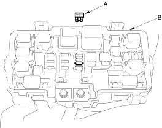
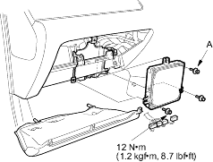

How to Reset the ECM/PCM
You can reset the ECM/PCM in either of 2 ways:
- Use the scan tool or Honda PGM Tester to clear the ECM's/PCM's memory.
See the scan tool or Honda PGM Tester user's manuals for specific instructions. - Turn the ignition switch OFF, and remove the No. 6 ECU (ECM/PCM) (15A) fuse (A) from the under-hood fuse/relay box (B) for 10 seconds.

How to End a Troubleshooting Session (required after any troubleshooting)
- Reset the ECM/PCM as described above.
- Turn the ignition switch OFF.
- Disconnect the scan tool or Honda PGM Tester from the DLC.
NOTE: The ECM/PCM is part of the immobiliser system. If you replace the ECM/PCM, it will have a different immobiliser code. In order for the engine to start, you must rewrite the immobiliser code with the Honda PGM Tester.
If the inspection for a trouble code requires voltage or resistance checks at the ECM/PCM connectors, remove the ECM/PCM and test it:
- Remove the passenger's dashboard lower cover (see page 20-220), the passenger's kick panel (see page 20-206), and the glove box (see page 20-220).
- Remove the ECM/PCM mounting bolt (A) and the bracket.

- Remove the ECM/PCM.